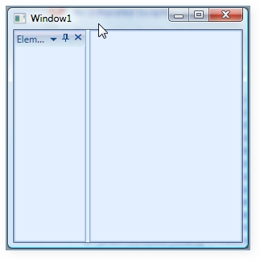
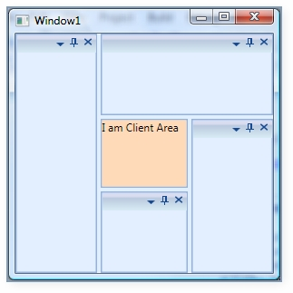

Our DockingManager control is completely integrated with MDI / TDI children elements. There are some situations wherein you need to disintegrate the MDI / TDI children from the DockingManager control. In such a case, you need to make use of the UseDocumentContainer property. This property gets or sets the Boolean value indicating whether to use the Document Container or not within the DockingManager.
When this property is set to False, the MDI / TDI children will be disintegrated from the DockingManager control.
To create the document window in DockingManager, you need to set the state of the Docking Manager children element to document.State. This will create the TDI / MDI elements of the children.
By default, this property is set to true. Once the MDI / TDI children are not required, you need to set the UseDocumentContainer property to False.
|
[XAML] <!--Declaring Docking Manager--> <syncfusion:DockingManager UseDocumentContainer="False">
<!--Children for the Docking Manager--> <StackPanel syncfusion:DockingManager.Header="Element one" syncfusion:DockingManager.State="Dock" syncfusion:DockingManager.SideInDockedMode="Left"/> </syncfusion:DockingManager> |
|
[C#] //Creating the instance of the DockingManager. DockingManager = new DockingManager();
// Disintegrating the MDI / TDI children from the DockingManager. DockingManager.UseDocumentContainer = false; |

Figure 360: UseDocumentContainer = "False"
In the above image, the Document Container is removed from the DockingManager control. When you remove the TDI / MDI children from the DockingManager, there will not be any client area for the other control. Now, to set the client area, you need to use a UI element called Client Control. You need to implement all your required client area data inside the Client Control. This will display in the client area of the DockingManager.
The below code snippet creates a client control for the DockingManager.
|
[XAML] <!--Declaring Docking Manager--> <syncfusion:DockingManager UseDocumentContainer="False"> <syncfusion:DockingManager.ClientControl> <StackPanel Background="PeachPuff"> <TextBlock Text="I am Client Area"/> </StackPanel> </syncfusion:DockingManager.ClientControl>
<!--Children for the Docking Manager--> <StackPanel syncfusion:DockingManager.State="Dock" syncfusion:DockingManager.SideInDockedMode="Left"/> <StackPanel syncfusion:DockingManager.State="Dock" syncfusion:DockingManager.SideInDockedMode="Top"/> <StackPanel syncfusion:DockingManager.State="Dock" syncfusion:DockingManager.SideInDockedMode="Right"/> <StackPanel syncfusion:DockingManager.State="Dock" syncfusion:DockingManager.SideInDockedMode="Bottom"/> </syncfusion:DockingManager> |

Figure 361: Client Control Created for the Docking Manager
 Triggering Actions while closing the TDI / MDI
items
Triggering Actions while closing the TDI / MDI
items